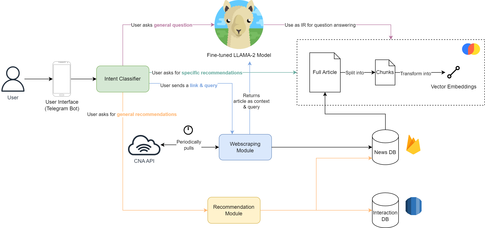
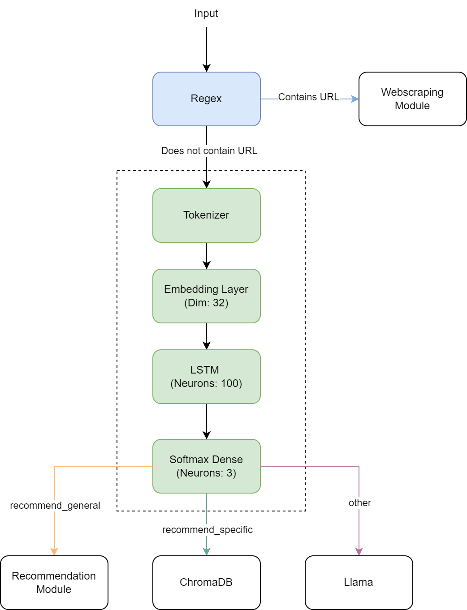
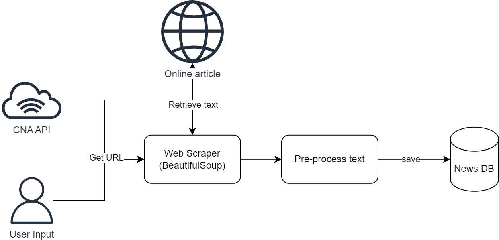
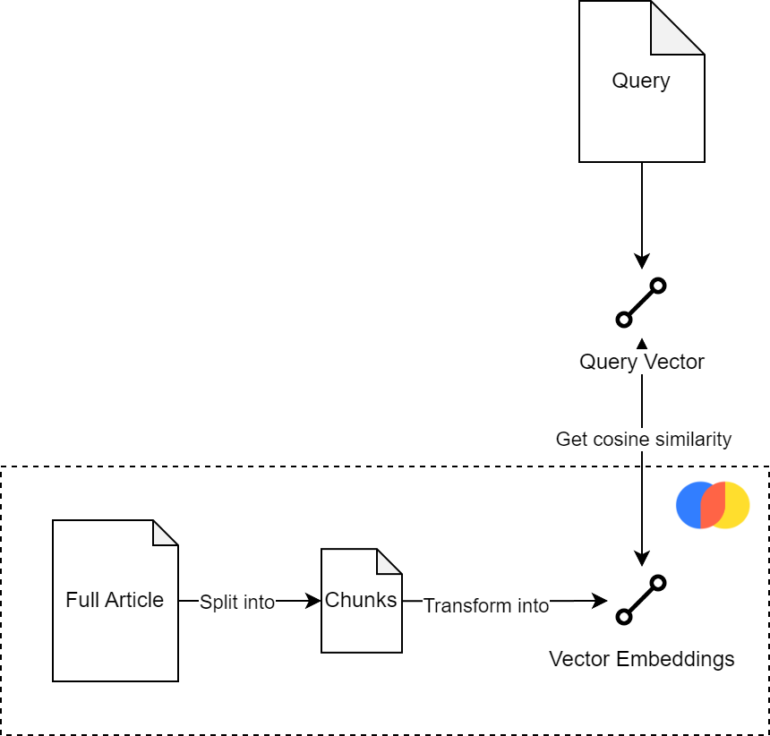

SMU CS425 2023 Project
In today's fast-paced world, staying informed and up to date with the latest news and developments has become more important than ever. However, the sheer expanse of available information can be overwhelming, making it difficult and time consuming to find news important and relevant to the individual. As such, our group developed a Personalised News Aggregator Chatbot (a.k.a. NAgg) to help users keep up with their daily news intake.
NAgg (News Aggregator Telegram Bot) is designed to offer
users personalized news article recommendations and assist with
tasks such as summarization and answering questions based on recent
news.
While there are existing chatbots that provide similar
functionalities related to news consumption and user interactions,
such as CNN's chatbot on Facebook Messenger, NAgg offers a more
nuanced user-centric experience by generating context-informed
responses to queries and recommending articles based on the user's
historical preferences.
The overall system is implemented as a Telegram bot that users can interact with. When users first send a query, the query goes through the Intent Classifier module, where it is classified into one of the four features of NAgg: General Queries, Article-Specific Queries, General (Content Filtering) Recommendations, and Topic Specific Recommendations.
The Intent Classifier serves as the entrypoint of the chatbot, which redirects user queries through the four separate modules of NAgg. It is implemented using regex and a simple Recurrent Neural Network (RNN) that is trained on a custom dataset. The regex serves to detect if a URL is present in the query, which sends it to the Web Scraping module for processing, while the RNN is trained to classify the queries. The custom dataset is generated with the help of ChatGPT to mimic 500 different ways that a user might use the chatbot, combined with 250 questions taken from the Microsoft NewsQA dataset. These phrases are labeled as 'recommend_general', 'recommend_specific', and 'other'.
The Webscraping module is used for the Article-Specific Querying feature and to update our news databases. It is responsible for scraping the CNA API RSS feed every 3 hour and extracting the article content, before preprocesing it with the NLTK library and saving the articles into Firebase. Additionally, if users provide a link to make questions about a certain article, it will be passed to this module to be scraped and saved, before passing the news article as context to the LlaMa-2 module. The Webscraper for periodically scraping the CNA website is hosted in an Oracle Cloud Instance (and has since been deactivated after amassing ~1300 articles of data).
The Topic-Specific Recommendation leverages a vector database called ChromaDB, which stores the vector embeddings of the articles from the Firebase DB. When a user asks for specific recommendations, their queries are transformed into vectors and compared against the embeddings. The distinct links associated with the top 10 embeddings with the closest cosine similarity as the query vector will be returned to the user.
Besides Topic-Specific Recommendation, we have also incorporated a Content-Based Filtering Recommendation system that analyses and tracks user-news interactions over time. This approach enables us to make personalised recommendations to users based on their historical preferences. To do this, we created a Utility Matrix that represents each user's "historical profile" as a vector. The user's profile is constructed by taking the average of the news embeddings of news that they have interacted with, as well as keeping track of their preferred category of articles (e.g. sports).
We fine-tuned a LLAMA-2 model with 7 billion parameters on the NewsQA dataset using QLoRA, then used the Langchain library to integrate this model with our ChromaDB database (that is also used by the Topic-Specific Recommendation). This allows the model to answer general queries by using relevant document chunks as context, or to answer questions about a specific article that is passed into it by the Webscraping module.
Overall, I am quite happy with the resulting product. Although we
had to change direction and drop certain functionalities that we had
originally wanted to to incorporate into the chatbot when we started
the project (such as translation of articles), we were still able to
deliver our key features of news summarisation and news
recommendation, while adding news question answering to our
chatbot's core features.
I think that the biggest challenge of this project came in the form
of hardware and budget limitations. Even with more efficient
fine-tuning techniques like QLoRA, we still required the use of GPU
in the cloud environment to train the model in a reasonable amount
of time. Alas, we were not able to permanently keep the Telegram bot
running due to budget constraints.
Some future improvements to this project would be to increase the
amount of training data we have to cover a greater breadth of
queries, adding conversational memory, and attention mechanism to
handle longer queries.